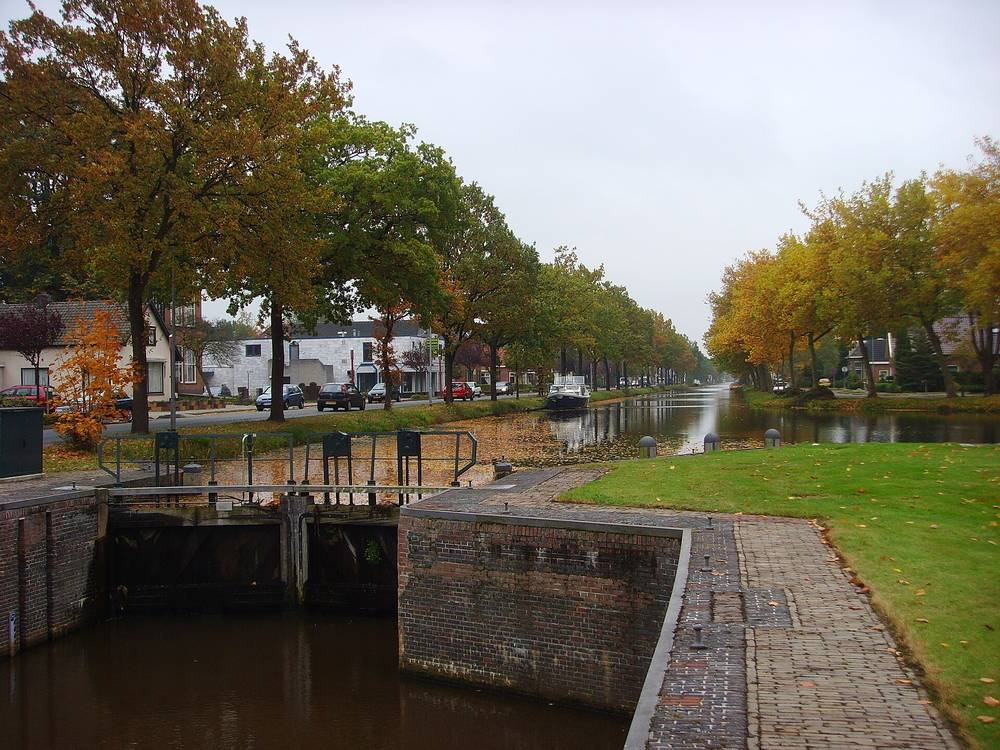

네덜란드 스타츠카날 시, 태양광 단지 '사회적 입찰'…주민 참여·이익 따져 최대 60MW 사업자 고른다

2018년 지정한 노르더딥·트베더 부런딥 두 구역, 계획당 30MW 이상…11월 21일까지 질의, 2027년 1월 31일 제출 마감, 선정돼도 허가는 따로
네덜란드 흐로닝언주 스타츠카날 시가 새 태양광 단지를 맡을 사업자를 주민에게 돌아가는 몫까지 따져 고르는 '사회적 입찰(maatschappelijke tender)'을 열었다. 대상은 시가 2018년 태양광 단지 구역으로 정한 스타츠카날의 노르더딥(Noorderdiep)과 무설카날의 트베더 부런딥(Tweede Boerendiep) 두 곳으로, 두 구역에는 이미 단지가 있고 트베더 부런딥에서는 단지 하나가 더 지어지고 있다. 계획은 한 건에 30MW 이상이어야 하며 이번 입찰로 시가 내주는 용량은 모두 최대 60MW다. 심사팀은 기술·재무 타당성과 함께 주민과 인근 주민을 계획에 어떻게 참여시키는지, 주민이 돈을 넣어 참여하거나 다른 방식으로 이익을 얻을 수 있는지, 경관·자연·생물다양성 영향과 계통 연결 가능성을 본다. 사업자는 11월 21일까지 질문을 낼 수 있고 계획 제출 마감은 2027년 1월 31일 23시59분이며, 탈락 기준 심사와 심사팀 평가를 거쳐 시장·부시장단이 한 계획을 고른다. 시는 선정이 곧 건설 허가는 아니어서 주민이 허가 절차에서 공식 의견을 낼 수 있다고 밝혔고, 단지를 두 구역에 모아 곳곳에 큰 단지가 들어서는 것을 막으면서 2050년에 시 안에서 쓰는 만큼의 재생에너지를 만든다는 목표에 보태겠다는 입장이다.
시민에너지 관점
네덜란드는 2019년 기후협약에서 육상 풍력·태양광 사업의 절반을 지역 주민과 공동체가 소유하는 것을 목표로 내걸었고, 스타츠카날의 입찰은 그 목표를 지자체가 부지를 정하는 단계에서 사업자 선정 기준으로 바꿔 놓은 사례다. 주민 몫을 따지면 사업성이 떨어져 응찰이 줄 것이라는 우려가 나올 수 있지만, 시가 미리 구역을 정해 입지 갈등을 덜어 주는 대신 주민 이익으로 경쟁하게 하는 것은 사업자에게도 예측 가능성을 주는 거래다. 다만 주민의 금전 참여를 어느 수준까지 요구하는지는 공개된 설명에 드러나지 않은 만큼, 주민 지분이 형식에 그치지 않으려면 최소 소유 비율을 처음부터 입찰 조건에 못 박아 두는 것이 중요하다. 국내 지자체도 공유지와 지정 구역의 태양광 사업자를 최저가가 아니라 주민 소유 비율로 경쟁시키는 입찰부터 도입해야 한다.
출처: De Nieuwsbode 2026-11-05 기자 미표기 원문 보기
창간 전 시험 발행 기사입니다.
オランダ・スタッツカナール市、太陽光パーク「社会的入札」…住民参加・利益を審査し最大60MWの事業者を選定
2018年指定のノールデルディープとトヴェーデ・ブーレンディープの2区域、計画1件30MW以上…11月21日まで質問受付、2027年1月31日提出締め切り、選定されても許可は別
オランダ・フローニンゲン州のスタッツカナール市が、新たな太陽光パークを担う事業者を、住民に還元される分まで考慮して選ぶ「社会的入札（maatschappelijke tender）」を始めた。対象は市が2018年に太陽光パーク区域に指定した、スタッツカナールのノールデルディープ（Noorderdiep）とムッセルカナールのトヴェーデ・ブーレンディープ（Tweede Boerendiep）の2カ所で、いずれにもすでにパークがあり、トヴェーデ・ブーレンディープではもう1カ所の建設が進んでいる。計画は1件30MW以上でなければならず、今回の入札で市が割り当てる容量は合計最大60MWだ。審査チームは技術・財務の実現可能性に加え、住民や周辺住民を計画にどう参加させるか、住民が資金を出して参加したり別の形で利益を得たりできるか、景観・自然・生物多様性への影響、系統接続の可能性を見る。事業者は11月21日まで質問でき、計画の提出期限は2027年1月31日23時59分で、足切り基準の審査と審査チームの評価を経て市長・助役会が1件を選ぶ。市は、選定は建設許可を意味せず、許可手続きで住民が正式に意見を出せると説明し、パークを2区域に集めて各地に大規模パークができるのを防ぎつつ、2050年に市内で使う分と同量の再生可能エネルギーをつくる目標に役立てたいとしている。
市民エネルギーの視点
オランダは2019年の気候協定で陸上風力・太陽光事業の半分を地域住民と共同体が所有することを目標に掲げており、スタッツカナールの入札はその目標を、自治体が用地を定める段階で事業者選定の基準に置き換えた例だ。住民の取り分を求めれば採算が下がり応札が減るとの懸念もありうるが、市があらかじめ区域を定めて立地をめぐる対立を和らげる代わりに住民の利益で競わせるのは、事業者にとっても予見可能性が高まる取引だ。ただ、住民の資金参加をどこまで求めるかは公表された説明から見えないため、住民出資が形だけに終わらないよう、最低所有比率を最初から入札条件に明記しておくことが重要だ。韓国の自治体も、公有地や指定区域の太陽光事業者を最低価格ではなく住民所有比率で競わせる入札から導入すべきだ。
出典: De Nieuwsbode（デ・ニーウスボーデ） 2026-11-05 記者名なし 原文を読む
創刊前の試験発行記事です。
荷兰斯塔茨卡纳尔市太阳能园区"社会招标"…按居民参与和收益评选，最多60MW
2018年划定的诺尔德迪普和特维德布伦迪普两个区域，每个方案30MW以上…11月21日前可提问，2027年1月31日截止提交，入选也须另行申请许可
荷兰格罗宁根省斯塔茨卡纳尔市启动"社会招标（maatschappelijke tender）"，在挑选新建太阳能园区的开发方时，把能回馈居民多少也纳入考量。招标对象是市政府2018年划定为太阳能园区区域的两处：斯塔茨卡纳尔的诺尔德迪普（Noorderdiep）和穆瑟尔卡纳尔的特维德布伦迪普（Tweede Boerendiep）；两处都已有园区，特维德布伦迪普另有一座正在建设。每个方案须在30MW以上，本次招标市政府释放的总容量最多60MW。评审组除技术和财务可行性外，还要看如何让居民和周边居民参与方案、居民能否出资参与或以其他方式获益，以及对景观、自然和生物多样性的影响和并网可能性。开发方可在11月21日前提问，方案提交截止时间为2027年1月31日23时59分，经淘汰标准审查和评审组评估后，由市长和市政委员会选定一个方案。市政府表示，入选并不等于获得建设许可，居民可在许可程序中正式提出意见；把园区集中在两个区域，是为了避免到处出现大型园区，同时助力在2050年实现本市可再生能源产量与用量相当的目标。
市民能源视角
荷兰在2019年《气候协定》中提出，陆上风电和光伏项目的一半应由当地居民和社区拥有；斯塔茨卡纳尔的招标，就是在地方政府划定用地的阶段把这一目标变成了开发方评选标准。有人担心计较居民份额会降低项目收益、减少投标，但由市政府事先划定区域、减少选址冲突，再让开发方以居民收益竞争，对开发方而言也是一笔提高可预期性的交易。不过，对居民出资参与要求到什么程度，公开说明中并未体现；要让居民持股不流于形式，就应从一开始把最低持股比例写进招标条件。韩国地方政府也应从招标做起，让公有土地和指定区域的光伏开发方以居民持股比例而非最低价竞争。
来源: De Nieuwsbode 2026-11-05 未署名 查看原文
本文为创刊前试发行文章。
Dutch municipality of Stadskanaal opens 'social tender' for solar parks, choosing up to 60 MW on resident participation and benefit
Two zones designated in 2018, Noorderdiep and Tweede Boerendiep, with at least 30 MW per plan; questions until November 21, submissions close January 31, 2027, and selection does not mean a permit
The municipality of Stadskanaal in the Dutch province of Groningen has opened a "social tender" (maatschappelijke tender) to choose developers for new solar parks, weighing how much they would give back to residents. The tender covers two areas the municipality designated for solar parks in 2018, Noorderdiep in Stadskanaal and Tweede Boerendiep in Musselkanaal; both already host solar parks, and another is being built at Tweede Boerendiep. Each plan must be at least 30 MW, and the municipality is making a total of up to 60 MW available through the tender. Besides technical and financial feasibility, an assessment team will look at how residents and neighbours are involved in the plans, whether they can take a financial stake or benefit in other ways, the effects on landscape, nature and biodiversity, and whether the parks can be connected to the grid. Developers can submit questions until November 21 and plans until 23:59 on January 31, 2027; after a knock-out check and the team's assessment, the mayor and aldermen will select a plan. The municipality said selection is not a building permit and residents can formally respond during the permit procedure, adding that concentrating parks in two zones is meant to prevent large parks springing up everywhere while helping meet its goal of generating as much renewable energy in 2050 as the municipality consumes.
Citizen Energy View
In its 2019 Climate Agreement the Netherlands set a goal of half of onshore wind and solar projects being owned by local residents and communities, and Stadskanaal's tender turns that goal into a developer selection criterion at the stage when the municipality decides where projects go. Some may worry that weighing residents' share will hurt returns and deter bidders, but a deal in which the municipality designates zones in advance to ease siting conflicts and then has developers compete on resident benefit also gives developers more certainty. Still, the published description does not say how far residents' financial participation must go, so to keep resident ownership from becoming a formality a minimum ownership share should be written into the tender conditions from the start. Korean local governments should likewise begin tendering solar on public land and designated zones on the share of resident ownership rather than on the lowest price.
Source: De Nieuwsbode 2026-11-05 No byline Read the original
This article was published during the trial period before launch.